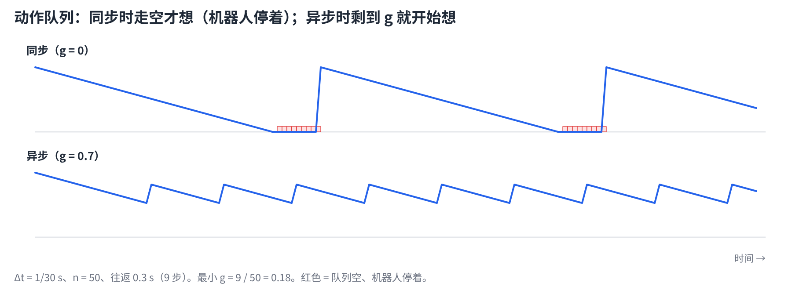
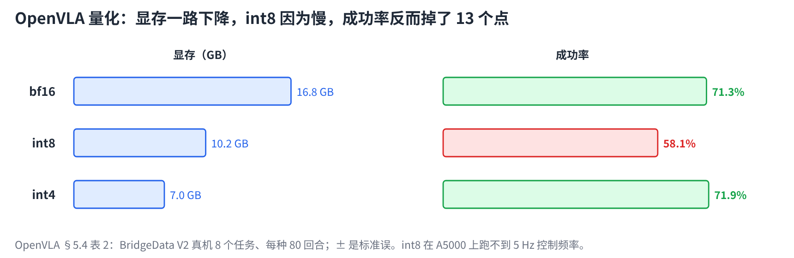

第 18 章 · 跑得快：异步推理、少看几眼、压小权重
本地运行
git clone https://github.com/wikieden/vla-from-scratch
cd vla-from-scratch/code/notebooks
pip install jupyterlab torch numpy
jupyter lab ch18_fast_inference.ipynb也可以下载后直接用 VS Code 打开 .ipynb 运行。需要 GPU 的章节在 Colab 里选「代码执行程序 → 更改运行时类型 → GPU」。
本章回答：同一个模型，为什么换成"异步推理"就快了 30%？队列剩多少就该开始想下一段？推理的时间花在哪：图像 token 和层数各占多少？量化成 8 位为什么反而让成功率掉了 13 个点？
讲解日期：2026-11-24 · 上一章：第 17 章 在线 RL · 下一章：第 19 章 评测
对应原文：materials/text/papers/smolvla-2506.01844.txt（SmolVLA）§3.3 异步推理 L300–L395（算法 1）；视觉 token 与跳层 L206–L218；动作专家 0.75 d L236；图 5 与 §4.6 L640–L672；openvla-2406.09246.txt§3.5 L334–L340、§5.4 量化 L604–L647；survey-efficient-vla-2510.24795.txt（高效 VLA 综述）L148–L168、L485–L525
本章缩写：SmolVLA = Small VLA（小号 VLA）；FLOPs = Floating-point Operations（浮点运算次数）；bf16 = bfloat16（brain floating point 16 位）；int8 / int4 = 8 位 / 4 位整数；VRAM = Video RAM（显存）；E[ℓ] = 一次推理往返时间的期望。全表见 appendix-glossary.md
讲解
第 1 步：异步推理，队列快空时就开始想（2026-11-24）
类比：餐厅后厨。 同步做法：一桌菜全上完，服务员才去下一桌的单，客人干等。异步做法：这桌还剩三成菜没上，就把下一单送进厨房；菜还没吃完，新菜已经在做了。
机器人的队列（L300–L330，算法 1）：模型一次出一段 n 步的动作，放进动作队列；控制循环每 Δt 从队头取一个执行。异步推理设一个阈值 g：
\(|A_t|\) 是队列里还剩几个动作。新一段算好后，和旧队列重叠的部分合并（L321–L325）。
g 取多大才不会断粮（L370–L379）：一次推理往返要 \(E[\ell]\) 秒，这段时间里机器人要走 \(E[\ell]/\Delta t\) 步，队列里至少要剩这么多：
例：30 fps 的相机，\(\Delta t = 1/30\) s；\(n = 50\)；推理往返 \(E[\ell] = 0.3\) s。往返期间要走 \(0.3 \times 30 = 9\) 步，所以 \(g \ge 9/50 = 0.18\)。
| g | 什么时候开始想 | 结果（L383–L395） |
|---|---|---|
| 0 | 队列走空才想 | 等于同步：每段之间停 \(E[\ell]\) 秒 |
| 0.7 | 用掉 30% 就想 | 论文默认：不断粮，重叠部分还能纠错 |
| 1 | 每步都想 | 最灵敏，但每个控制周期都要跑一次前向，最费算力 |
效果（图 5，§4.6 L640–L672，SO-100 真机，抓放立方体）：
| 平均完成时间 | 60 秒内放好几个 | 三个任务平均成功率 | |
|---|---|---|---|
| 同步 | 13.75 s | 9 | 78.3% |
| 异步 | 9.70 s（快约 30%） | 19 | 73.3% |
成功率差不多（分拣任务从 70% 掉到 50%，拉低了平均），但快得多、单位时间做得多。

图 18-1 · 横轴时间，纵轴队列剩余动作数。同步出现平台（机器人停着），异步一直不断粮。
和第 13 章的关系：异步推理解决"停"，但新旧两段直接拼接仍可能"跳"；第 13 章 RTC 在 flow 积分里加引导，解决"跳"。
一句话：往返要多久，队列里就至少留够这么多步；剩到 g 就开始想。
第 2 步：时间花在哪，少看几眼、少算几层（2026-11-24）
类比：读文件。 文件越长、要读几遍越多，越慢。VLA 的"文件"是输入 token，"读几遍"是层数。
粗估：前缀一次前向的计算量大致和"token 数 × 层数"成正比（每个 token 每层都要过一遍权重）：
第 5 章算过：PaliGemma 一张图 256 个 token，3 个相机就是 768 个，指令只有十几个。图像 token 占了绝大部分。
SmolVLA 的两刀：
| 做法 | 原文 | 省了多少 |
|---|---|---|
| 每帧只留 64 个视觉 token（不切块，只用全局图 + pixel shuffle） | L206–L210 | 256 → 64，少 4 倍 |
| 动作专家只读到 VLM 的第 N = L/2 层，后一半层不算 | L212–L218 | 层数减半 |
| 动作专家隐藏维取 0.75 d | L236 | 小脑也变窄 |
例（按上面的比例粗估，层数取 18 是为了好比较）：
| 每帧 token | 3 个相机 | 层数 | token × 层 | |
|---|---|---|---|---|
| π0 式前缀 | 256 | 768 | 18 | 13,824 |
| SmolVLA 式前缀 | 64 | 192 | 9 | 1,728 |
少了 8 倍。这就是 SmolVLA（0.45B，L522）能在消费级 GPU 甚至 CPU 上跑的原因。
高效 VLA 综述的分类（L148–L168、L485–L525）：
| 大类 | 小类 | 本书在哪讲过 |
|---|---|---|
| 高效模型设计：架构 | 高效注意力、高效动作解码、轻量组件、MoE、分层系统 | 第 7 章 FAST、第 8 章动作专家、第 10 章分层、第 15 章并行解码 |
| 高效模型设计：压缩 | 层剪枝、量化、token 优化（剪掉不重要的图像 token） | 本章第 2、3 步 |
| 高效训练 | 预训练 / 后训练（SFT、RL） | 第 9、17 章 |
| 高效数据采集 | 仿真、复用、自主采集 | 第 16 章跨本体 |
一句话：计算量 ≈ token × 层，图像 token 是大头；少看几眼、少算几层，最直接。
第 3 步：量化，显存小了，但不一定更快（2026-11-24）
类比：搬家时把书压缩成电子版。 体积小了，但每次翻页都要"解压"一下；解压太慢，反而比翻纸书还慢。
显存粗估：只算权重，
7B 模型：bf16（2 字节）约 14 GB；int8（1 字节）约 7 GB；int4（0.5 字节）约 3.5 GB。实测还要加上视觉编码器、激活和运行时开销。
OpenVLA 的实测（§5.4 表 2，L604–L612，BridgeData V2 真机 8 个任务、每种 80 次）：
| 精度 | 显存 | 成功率 |
|---|---|---|
| bf16 | 16.8 GB | 71.3 ± 4.8% |
| int8 | 10.2 GB | 58.1 ± 5.1% |
| int4 | 7.0 GB | 71.9 ± 4.7% |
为什么 int8 掉了（L639–L647、L680–L681）：8 位量化多了反量化的运算，在多数 GPU 上反而更慢；在评测用的 A5000 上跑不到 BridgeData 要求的 5 Hz 控制频率。离线看 token 准确率，三种精度差不多。所以掉点不是因为算错，而是因为慢：闭环控制里，慢了就跟不上画面。
int4 显存不到一半，速度也够，成功率和 bf16 一样。
场景代码：OpenVLA 自带的 4 位加载写法（materials/code/openvla-oft/repo/vla-scripts/extern/verify_openvla.py L60–L69，原文是注释掉的备选模式，这里去掉注释符）：
# === 4-BIT QUANTIZATION MODE (`pip install bitsandbytes`) :: [~6GB of VRAM Passive || 7GB of VRAM Active] ===
vla = AutoModelForVision2Seq.from_pretrained(
MODEL_PATH, # "openvla/openvla-7b"
attn_implementation="flash_attention_2",
torch_dtype=torch.float16,
quantization_config=BitsAndBytesConfig(load_in_4bit=True), # 第 3 步：int4，运行时约 7 GB
low_cpu_mem_usage=True,
trust_remote_code=True,
)

图 18-2 · 显存随位数下降；int8 因为慢，成功率掉了 13 个点。
一句话：量化先看显存，再看速度；闭环控制里，慢就是错。
动画演示：动作队列与阈值 g

可交互版：animations/18-fast-inference.html（滑块：阈值 g 0–1、推理往返 0.05–1 s、chunk 长度 n 10–100）。
怎么看：
- 锯齿线是队列里剩几个动作，橙色竖条是模型在想的时间段（第 1 步）；
- 队列掉到 0 的地方标红，表示机器人停着；右上角是 10 秒内停了多久、跑了几次前向；
- 虚线是"不断粮"的最小 g = (E[ℓ]/Δt)/n；
- 播放：g = 0（同步）→ 0.18（刚好）→ 0.7（默认）→ 1（每步都想）→ 往返改 0.8 s。
练习与作答记录
题 1（第 1 步）：控制频率 50 Hz，chunk 长度 n = 50，推理往返 0.25 s。不断粮的最小 g 是多少？如果设 g = 0.7，每段会和下一段重叠几步？
作答记录：（待作答）
题 2（第 2 步）：一个 VLA 用 2 个相机，每帧 256 个 token，24 层；改成每帧 64 个 token、只用前 12 层。"token × 层"缩小了几倍？
作答记录：（待作答）
题 3（第 3 步）：一个 3B 模型，bf16 和 int4 下权重各约多少 GB？如果 int4 在你的 GPU 上比 bf16 慢一倍，你会选哪个？为什么？
作答记录：（待作答）
口诀
菜还剩三成就下新单，往返多久就留够几步；
读得长、读得遍数多就慢，少看几眼少算几层；
压成电子版省地方，翻页太慢反而误事。
本章复习卡片
V43（异步推理阈值 \(g \ge (E[\ell]/\Delta t)/n\)；SmolVLA 13.75 → 9.70 s、9 → 19 个）、V44（计算量 ∝ token × 层；64 token/帧、跳一半层；OpenVLA int8 慢导致 71.3 → 58.1%）。练习做完后，按答错、卡住的地方再补。
附录 · 延伸阅读
留给以后深入学习用，不影响本章主线。★ 是建议先读的。
推荐阅读
| 读什么 | 读哪里 | 读它为了什么 |
|---|---|---|
| ★ SmolVLA（Shukor 等，2025） | smolvla-2506.01844.txt §3.3、§4.6 |
异步推理的算法和实测 |
| OpenVLA §5.4 | openvla-2406.09246.txt L604–L681 |
量化与成功率 |
| ★ 高效 VLA 综述（2025） | survey-efficient-vla-2510.24795.txt §3 |
当字典查各种加速方法 |
| 第 13 章 实时执行 RTC | 冻结 + 补全 | 异步之后怎么接得不跳 |
| 《从约束推导 AI Infra》第 4 章 关键数字 | 算力、带宽、显存 | 估延迟的底层数字 |
| 《从约束推导 AI Infra》第 47 章 压缩与卸载 | 量化的代价 | 为什么少几位不一定快 |
数学原理
- 排队不断粮：消耗速度 \(1/\Delta t\) 步每秒，补货要 \(E[\ell]\) 秒，库存至少 \(E[\ell]/\Delta t\)。
- 线性层的计算量：一个 token 过一个 \(d \times d\) 的矩阵约 \(2d^2\) 次浮点运算；层数、token 数各乘一倍，总量乘一倍。
- 量化：用 \(q = \mathrm{round}(w / s)\) 存整数、用 \(w \approx s \cdot q\) 还原；还原这一步要额外计算。
公式清单
| 公式 | 意思 |
|---|---|
| \(\lvert A_t\rvert / n < g\) 时触发推理 | 异步推理的阈值 |
| \(g \ge (E[\ell]/\Delta t)/n\) | 不断粮的最小 g |
| 前缀计算量 \(\propto N_{\text{token}} \times L\) | 粗估推理成本 |
| 权重显存 \(\approx\) 参数量 \(\times\) 字节数 | bf16 = 2、int8 = 1、int4 = 0.5 |
代码对照：把本章的数字用代码算一遍
纯 Python。代码在仓库本地
vla-deep-dive/solutions/chapter-code/ch18_fast_inference.py，配套测试tests/test_ch18.py：
bash cd vla-deep-dive/solutions/chapter-code uv run python ch18_fast_inference.py uv run pytest tests/test_ch18.py
讲义 ↔ 代码：
| 讲义 | 写法 | 跑出来 |
|---|---|---|
| 第 1 步 | min_threshold(latency, dt, n) |
0.18 |
| 第 1 步 | simulate_queue(g, latency, dt, n, seconds) |
g = 0 时每段停 0.3 s；g = 0.18 时不停 |
| 第 1 步 | SMOLVLA_FIG5 |
快 29.5%；9 → 19 个 |
| 第 2 步 | prefix_cost(tokens_per_frame, cams, layers) |
13,824 vs 1,728，少 8 倍 |
| 第 3 步 | weight_gb(params, bits)、OPENVLA_QUANT |
14 / 7 / 3.5 GB |
代码里才看得到的 3 件事：
simulate_queue按控制步离散地走，触发条件写成 ≤（论文写 <）：g 正好等于下限时，新一段在队列刚好用完的那一步到达，不断粮；用 < 会差一步。代码同一时间只允许一次推理在路上，所以 g = 1 也只是每 9 步发一次。- 新一段到达时，代码丢掉旧队列、从新一段里跳过"想的这段时间已经走掉的步数"，这是最简单的合并方式；SmolVLA 在重叠处做聚合。
weight_gb用 1e9 字节当 1 GB，和 OpenVLA 表里的写法一致；按 GiB 算会小 7%。
自己改一改（不影响练习答案）：
- 在
simulate_queue里把往返时间改成随机的（比如 0.2–0.4 s 均匀），看 g = 0.18 还够不够。 - 用
prefix_cost算"只减 token、不减层"和"只减层、不减 token"各省多少。 - 给
weight_gb加上视觉编码器（0.4B、bf16），比较总显存。